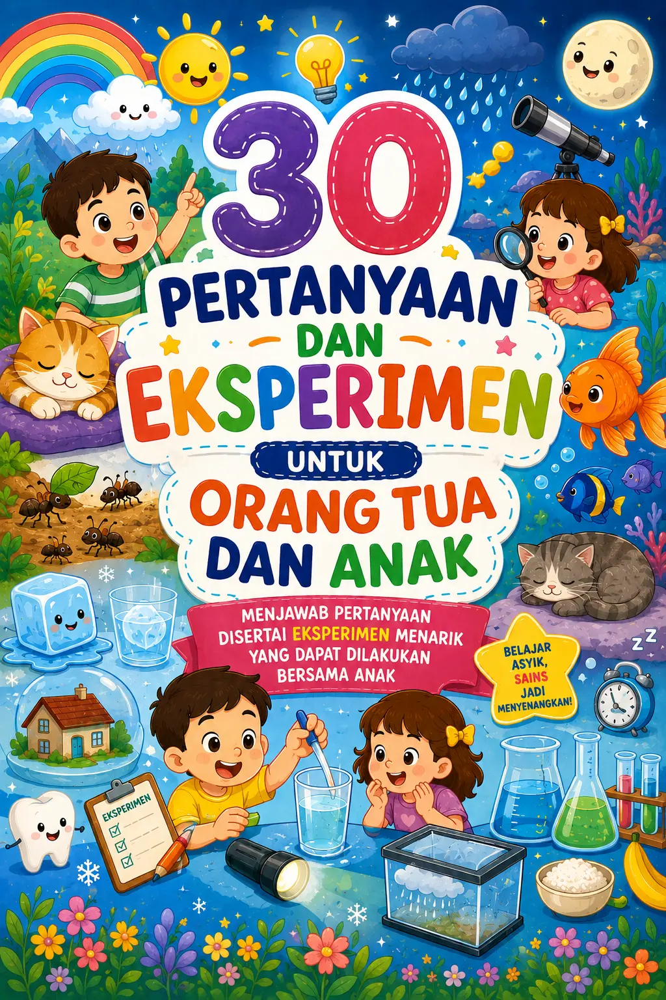
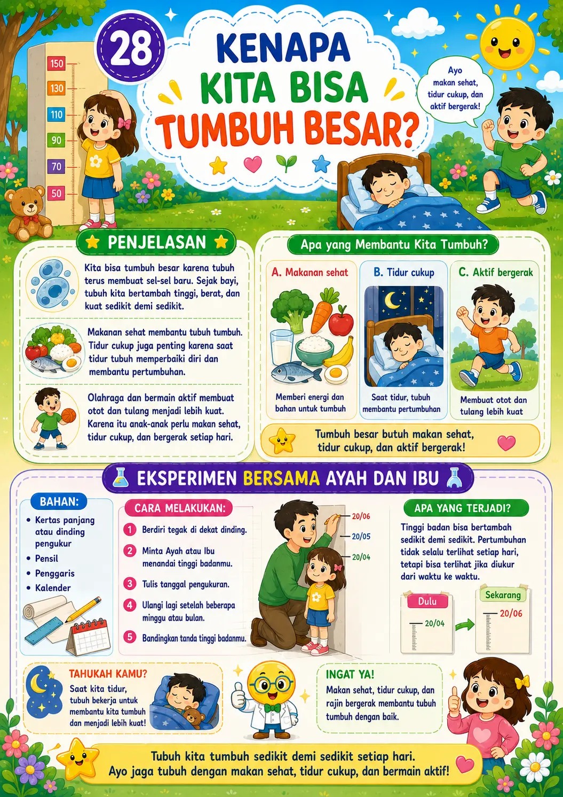

30 Eksperimen Seru untuk Anak dan Orang Tua di Rumah
Buku edukasi anak berisi pertanyaan sains sehari-hari, penjelasan sederhana, dan eksperimen aman yang bisa dilakukan bersama Ayah dan Ibu.
- 30 pertanyaan sains anak yang dekat dengan kehidupan sehari-hari
- Bahasa sederhana, hangat, dan ramah anak
- Eksperimen mudah dengan benda yang ada di rumah
- Cocok untuk PAUD, TK, dan SD awal

Anak Suka Bertanya?
Anak Sering Bertanya “Kenapa?”, Tapi Kita Bingung Menjawabnya?
Pertanyaan sederhana seperti ini sering muncul dari rasa ingin tahu anak. Tapi kadang, orang tua tidak selalu tahu cara menjelaskan sains dengan bahasa yang ringan dan mudah dipahami.
Buku ini hadir untuk membantu Ayah, Ibu, dan guru menjawab pertanyaan anak dengan cara yang menyenangkan.
Kenalkan Sains Lewat Cerita Pendek dan Percobaan Sederhana
Anak tidak hanya membaca jawaban. Anak diajak mengamati, mencoba, membandingkan, dan menceritakan kembali apa yang mereka temukan.
Baca
Anak memahami konsep sains dengan bahasa sederhana yang dekat dengan dunia mereka.
Coba
Anak melakukan aktivitas sederhana bersama orang tua menggunakan benda di rumah.
Ceritakan
Anak belajar menjelaskan kembali hasil pengamatannya dengan percaya diri.
Apa Saja yang Dipelajari Anak?
Buku ini berisi 30 pertanyaan sains yang dekat dengan kehidupan sehari-hari anak.
Kenapa Langit Berwarna Biru?
Anak belajar tentang cahaya matahari dan warna langit.
Kenapa Hujan Turun dari Awan?
Anak mengenal proses sederhana siklus air.
Kenapa Ikan Bisa Hidup di Air?
Anak belajar bahwa ikan bernapas dengan insang.
Kenapa Pelangi Punya Banyak Warna?
Anak mengenal warna cahaya melalui tetesan air.
Kenapa Kita Bernapas?
Anak memahami pentingnya oksigen untuk tubuh.
Kenapa Kita Harus Menjaga Bumi?
Anak belajar mencintai lingkungan sejak dini.
Setiap Bab Dibuat Praktis dan Mudah Diikuti
Strukturnya sederhana, sehingga orang tua atau guru mudah membacakan dan mendampingi anak.
Pertanyaan Utama
Dimulai dari rasa penasaran anak.
Penjelasan Sederhana
Konsep sains dijelaskan dengan bahasa ringan.
Aktivitas Bersama Ayah dan Ibu
Anak diajak mengamati dan mencoba dengan aman.
Apa yang Terjadi?
Anak memahami hasil pengamatan dengan sederhana.
Momen Belajar Bersama Keluarga
Baca, coba, amati, lalu ceritakan bersama.
Bukan Sekadar Buku Bacaan, Tapi Teman Belajar Anak di Rumah
Buku Ini Cocok Untuk…
Orang Tua
Yang ingin mengenalkan sains sejak dini di rumah.
Guru
Sebagai bahan diskusi dan aktivitas kelas.
Anak 4–8 Tahun
Terutama anak yang suka bertanya dan bereksplorasi.
Hadiah Edukatif
Untuk anak, keponakan, cucu, atau murid.
Intip Sekilas Isi Bukunya
Setiap halaman dibuat ramah anak dengan kalimat sederhana, ilustrasi ekspresif, dan aktivitas yang mudah dipahami.
Cover Buku
Cover utama buku yang menarik, ceria, dan ramah anak.

Halaman Penjelasan
Contoh pertanyaan, jawaban sains sederhana, dan aktivitas pengamatan anak.
.webp)
Aktivitas Anak
Bagian yang mengajak anak mencoba, mengamati, dan bercerita.
Siap Menemani Anak Bereksperimen di Rumah?
Pesan buku “30 Eksperimen Anak & Orang Tua” sekarang dan jadikan waktu belajar anak lebih seru, hangat, dan bermakna.
Pertanyaan yang Sering Ditanyakan
Buku ini cocok untuk anak usia berapa?
Buku ini cocok untuk anak usia 4–8 tahun, terutama PAUD, TK, dan SD awal.
Apakah eksperimennya aman?
Eksperimen dibuat sederhana dan tetap perlu pendampingan orang dewasa.
Apakah orang tua harus paham sains dulu?
Tidak harus. Penjelasan di dalam buku dibuat ringan agar mudah dibacakan dan dipahami bersama anak.
Apakah cocok untuk guru?
Ya. Buku ini bisa digunakan sebagai bahan diskusi, aktivitas pengamatan, atau eksperimen sederhana di kelas.
Apakah cocok untuk hadiah?
Ya. Buku ini cocok sebagai hadiah edukatif untuk anak, keponakan, cucu, atau murid.
Mulai dari Pertanyaan Kecil, Anak Bisa Mengenal Dunia Lebih Luas
Bantu anak menemukan bahwa belajar bisa dimulai dari hal-hal sederhana di sekitarnya. Dari langit biru, hujan, daun, pelangi, sampai tubuh kita sendiri—semuanya bisa menjadi pintu masuk untuk mencintai ilmu pengetahuan.
Pesan Buku Sekarang